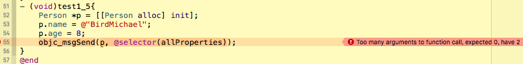
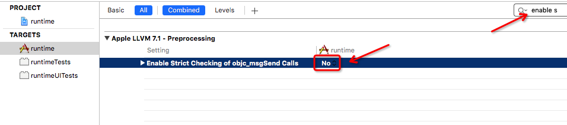

iOS运行时runtime及相关Objective-C底层讲解
runtime体验
引言
运行时作为面试题中高阶问题必不可少的一个技能点。经常面试官会问道是否使用过运行时，以及如何使用运行时。并且我认为这个技术算是高阶开发里面一个投机的技巧，绝大多数的UI开发都不会使用runtime，容易出现很严重的问题，并且官方也不是特别推荐使用。所以会导致很多人对运行时没有一个清晰全面的认识，网上资料也很少。所以你一定会有这样的疑问：什么是运行时？在我们的项目中怎么使用运行时？哪些时候可以使用运行时？等等。。
问题：当想在一个分类（category）中添加一个属性时，并且iOS是不允许给扩展类扩展属性的（category相对于子类来说，如果需要添加一个新的变量，则需添加子类。如果只是添加一个新的方法，用Category是比较好的选择。）
答案：使用runtime。
runtime机制
我们都知道Objective-C是C的超集，我们平时写的Objective-C都是最终转成了runtime的C语言代码，所以runtime是一套比较底层的纯C的API，属于C语言库，包含了很多底层C语言的API。
所以，在我们编译时，其实runtime是不存在。只有在运行过程中才去确定对象的类型，方法等等。而我们就可以根据这个特性再程序运行时动态的修改类、对象中的所有属性、方法。
我们在使用运行时的地方，都需要包含头文件：#import <objc/runtime.h>;。如果是Swift就不需要包含头文件，就可以直接使用了。
runtime头文件
在iOS 9.3 user/include>objc文件夹下有如下的文件
1 | message.h |
这些都是runtime相关的头文件，其中我们主要使用的是message.h和runtime.h这2个文件。
首先贴上源码
1 | /// An opaque type that represents a method in a class definition. 一个类型，代表着类定义中的一个方法 |
这些类型的定义，对一个类进行了完全的分解，将类定义或者对象的每一个部分都抽象为一个类型type，对操作一个类属性和方法非常方便。OBJC2_UNAVAILABLE标记的属性是Ojective-C 2.0不支持的,但实际上可以用响应的函数获取这些属性，例如：如果想要获取Class的name属性，可以按如下方法获取:
1 | Class classPerson = Person.class; |
函数的定义
- 对对象进行操作的方法一般以
object_开头 - 对类进行操作的方法一般以
class_开头 - 对类或对象的方法进行操作的方法一般以
method_开头 - 对成员变量进行操作的方法一般以
ivar_开头 - 对属性进行操作的方法一般以
property_开头开头 - 对协议进行操作的方法一般以
protocol_开头
根据以上的函数的前缀 可以大致了解到层级关系。
对于以objc_开头的方法，则是runtime最终的管家，可以获取内存中类的加载信息,类的列表，关联对象和关联属性等操作。
例如：使用runtime对当前的应用中加载的类进行打印。
- (void)touchesBegan:(NSSet *)touches withEvent:(UIEvent *)event {
unsigned int count = 0;
Class *classes = objc_copyClassList(&count);
for (int i = 0; i < count; i++) {
const char *cname = class_getName(classes[i]);
printf("%s\n", cname);
}
}
获取对象所有属性名
利用运行时获取对象的所有属性名是可以的，但是变量名获取就得用另外的方法了。我们可以通过class_copyPropertyList方法获取所有的属性名称。
下面我们通过一个Person类来学习，这里的方法没有写成扩展，只是为了简化，将获取属性名的方法直接作为类的实例方法：
1 | #import <Foundation/Foundation.h> |
下面主要是写如何获取类的所有属性名的方法。
1 | #import "Person.h" |
现在，我们来测试一下，我们的方法是否正确获取到了呢？看下面的打印结果就明白了吧！
1 | - (void)test1_2{ |
输出结果：
1 | 2016-05-05 17:27:47.667 runtime[2368:257719] classSize = 48 |
注意：上面提到的objc_property_t是一个结构体指针objc_property *，因此我们声明的properties就是二维指针。所以在使用完毕以后，一定要释放内存，否则会造成内存泄露。并且由于runtime使用的是C语言的API，所以我们也需要使用C语言释放内存的方法：free()。
1 | /** |
@interface Person : NSObject {
NSString *_variableString;
}
// 默认会是什么呢？
@property (nonatomic, copy) NSString *name;
// 默认是assign类型
@property (nonatomic, copy) NSString *firtName;
// 默认是strong类型
@property (nonatomic, strong) NSMutableArray *array;
// 默认是assign类型
@property (nonatomic, assign) NSUInteger age;
// 默认是assign类型
@property (nonatomic, assign) BOOL sex;
// 获取对象的所有属性名和属性值
- (NSDictionary *)allPropertyNamesAndValues;
@end1
下面主要是写如何获取对象的所有属性名和属性值的方法。
(NSDictionary )allPropertyNamesAndValues {
NSMutableDictionary resultDict = [NSMutableDictionary dictionary];unsigned int outCount;
objc_property_t *properties = class_copyPropertyList([self class], &outCount);for (int i = 0; i < outCount; i++) {
objc_property_t property = properties[i]; const char *name = property_getName(property); // 得到属性名 NSString *propertyName = [NSString stringWithUTF8String:name]; // 获取属性值 id propertyValue = [self valueForKey:propertyName]; if (propertyValue && propertyValue != nil) { [resultDict setObject:propertyValue forKey:propertyName]; }}
// 记得释放
free(properties);return resultDict;
}1
继续测试一下：
(void)test1_3{
Person p = [[Person alloc] init];
p.name = @”BirdMichael”;
p.age = 8;
NSDictionary dict = p.allPropertyNamesAndValues;
for (NSString *propertyName in dict.allKeys) {NSLog(@"propertyName: %@ propertyValue: %@", propertyName, dict[propertyName]); }}
1
输出结果：
2016-05-05 18:27:10.345 runtime[2618:313291] propertyName: name propertyValue: BirdMichael
2016-05-05 18:27:10.347 runtime[2618:313291] propertyName: age propertyValue: 8
2016-05-05 18:27:10.347 runtime[2618:313291] propertyName: sex propertyValue: 01
2
3
4
## 获取对象的所有方法名
通过class_copyMethodList方法就可以获取所有的方法。并且我们知道，每一个属性都会自动生成一个成员变量和setter以及getter方法。(省略部分相同代码)
(void)allMethods {
unsigned int outCount = 0;
Method *methods = class_copyMethodList([self class], &outCount);for (int i = 0; i < outCount; ++i) {
Method method = methods[i]; // 获取方法名称，但是类型是一个SEL选择器类型 SEL methodSEL = method_getName(method); // 需要获取C字符串 const char *name = sel_getName(methodSEL); // 将方法名转换成OC字符串 NSString *methodName = [NSString stringWithUTF8String:name]; // 获取方法的参数列表 int arguments = method_getNumberOfArguments(method); NSLog(@"方法名：%@, 参数个数：%d", methodName, arguments);}
// 记得释放
free(methods);
}1
测试一下：
(void)test1_4{
Person *p = [[Person alloc] init];[p allMethods];
}1
输出结果：
2016-05-05 18:35:39.886 runtime[2709:323818] 方法名：allProperties, 参数个数：2
2016-05-05 18:35:39.886 runtime[2709:323818] 方法名：setAge:, 参数个数：3
2016-05-05 18:35:39.887 runtime[2709:323818] 方法名：allPropertyNamesAndValues, 参数个数：2
2016-05-05 18:35:39.887 runtime[2709:323818] 方法名：allMethods, 参数个数：2
2016-05-05 18:35:39.887 runtime[2709:323818] 方法名：firtName, 参数个数：2
2016-05-05 18:35:39.887 runtime[2709:323818] 方法名：setFirtName:, 参数个数：3
2016-05-05 18:35:39.888 runtime[2709:323818] 方法名：age, 参数个数：2
2016-05-05 18:35:39.888 runtime[2709:323818] 方法名：sex, 参数个数：2
2016-05-05 18:35:39.888 runtime[2709:323818] 方法名：setSex:, 参数个数：3
2016-05-05 18:35:39.888 runtime[2709:323818] 方法名：setArray:, 参数个数：3
2016-05-05 18:35:39.888 runtime[2709:323818] 方法名：.cxx_destruct, 参数个数：2
2016-05-05 18:35:39.888 runtime[2709:323818] 方法名：name, 参数个数：2
2016-05-05 18:35:39.889 runtime[2709:323818] 方法名：array, 参数个数：2
2016-05-05 18:35:39.889 runtime[2709:323818] 方法名：setName:, 参数个数：31
调用打印结果如下，为什么参数个数看起来不匹配呢？比如`-allProperties`方法，其参数个数为0才对，但是打印结果为2。根据打印结果可知，无参数时，值就已经是2了。**这个在后面会详细讲解。**
/ Working with Methods /
/**
- Returns the name of a method.
- @param m The method to inspect.
- @return A pointer of type SEL.
- @note To get the method name as a C string, call \c sel_getName(method_getName(method)).
*/
OBJC_EXPORT SEL method_getName(Method m)
OSX_AVAILABLE_STARTING(MAC_10_5, __IPHONE_2_0);
/**
- Returns the number of arguments accepted by a method.
- @param m A pointer to a \c Method data structure. Pass the method in question.
- @return An integer containing the number of arguments accepted by the given method.
*/
OBJC_EXPORT unsigned int method_getNumberOfArguments(Method m)
OSX_AVAILABLE_STARTING(MAC_10_0, __IPHONE_2_0);1
2
3## 获取对象的成员变量名称
要获取对象的成员变量，可以通过`class_copyIvarList`方法来获取，通过ivar_getName来获取成员变量的名称。并且我们知道，每一个属性都会自动生成一个成员变量和setter以及getter方法。(省略部分相同代码)
(NSArray )allMemberVariables {
unsigned int count = 0;
Ivar ivars = class_copyIvarList([self class], &count);NSMutableArray *results = [[NSMutableArray alloc] init];
for (NSUInteger i = 0; i < count; ++i) {Ivar variable = ivars[i]; const char *name = ivar_getName(variable); NSString *varName = [NSString stringWithUTF8String:name]; [results addObject:varName];}
free(ivars);
return results;
}1
测试一下：
(void)test1_4{
Person p = [[Person alloc] init];
for (NSString varName in p.allMemberVariables) {NSLog(@"%@", varName);}
}1
打印结果：
2016-05-05 18:48:19.969 runtime[2846:343854] _variableString
2016-05-05 18:48:19.970 runtime[2846:343854] _sex
2016-05-05 18:48:19.970 runtime[2846:343854] _name
2016-05-05 18:48:19.970 runtime[2846:343854] _firtName
2016-05-05 18:48:19.970 runtime[2846:343854] _array
2016-05-05 18:48:19.970 runtime[2846:343854] _age1
2
3
4
5
6
## 运行时发消息
iOS中，可以在运行时发送消息，让接收消息者执行对应的动作。可以使用`objc_msgSend`方法，发送消息。因为objc_msgSend是因为只有对象才能发送消息，所以肯定是以objc开头的。
另外：使用运行时发送消息前，必须导入`#import <objc/message.h>`
- (void)test1_5{
Person *p = [[Person alloc] init];
p.name = @”BirdMichael”;
p.age = 8;
objc_msgSend(p, @selector(allMethods));
}`` 但是这样就等于把[p allMethods]`这个方法用底层的方法表示出来，其实[p allMethods]也会转成这句代码。此时你会发现很尴尬的一个现象是：编译器会报错。

问题出在：期望的参数为空，但是实际上是有2个参数的。所以我们需要来关闭严格检查来解决这个问题。
问题提示期望的参数为0，但是实际上有两个参数。解决办法是，关闭严格检查：

## 扩展属性（Associative）
### Associative概念
在日常的开发中，objective-c有两个扩展的机制：category和associative。而我们日常使用中百分之90都是使用的category作为日常的扩展方法，但是这个方法有很大的局限性：因为它并不能扩展属性。于是我们就需要借助于另外一个属性的扩展机制：
objective-c有两个扩展机制：category和associative。我们可以通过category来扩展方法，但是它有个很大的局限性，不能扩展属性。于是，就有了专门用来扩展属性的机制：associative。
### Associative介绍及使用
#### associative方法
associative的原理就是把两个对象对象互相的捆绑、关联起来，使的其中的一个对象成为另外一个对象的一部分。并且我们可以不用使用修改类的定义而为其对象增加储存空间。这就有一个非常大的好处：在我们无法访问到类的源码的时候或者是考虑到二进制兼容性的时候是非常有用的。为什么我说这个很有用呢？因为这允许开发者对已经存在的类在扩展中添加自定义的属性，这几乎弥补了Objective-C最大的缺点。
在使用上，associative是基于key的。所以，我们可以为任何的对象增加无数个不同key的associative，每个都使用上不同的key就好了。并且associative是可以保证能被关联的对象在关联对象的整个生命周期都是可用。
注意：由于正常的扩展是不可以扩展属性的，所以我们在使用associative的时候童谣需要到入runtime.h来实现。
/ Associative References /
/
Policies related to associative references. These are options to objc_setAssociatedObject()
*/
typedef OBJC_ENUM(uintptr_t, objc_AssociationPolicy) {
OBJC_ASSOCIATION_ASSIGN = 0, /< Specifies a weak reference to the associated object. /
OBJC_ASSOCIATION_RETAIN_NONATOMIC = 1, /**< Specifies a strong reference to the associated object. The association is not made atomically. /
OBJC_ASSOCIATION_COPY_NONATOMIC = 3, /**< Specifies that the associated object is copied. The association is not made atomically. /
OBJC_ASSOCIATION_RETAIN = 01401, /**< Specifies a strong reference to the associated object. The association is made atomically. /
OBJC_ASSOCIATION_COPY = 01403 /**< Specifies that the associated object is copied. The association is made atomically. /
};
/** Sets an associated value for a given object using a given key and association policy.
@param object The source object for the association.
@param key The key for the association. @param value The value to associate with the key key for object. Pass nil to clear an existing association.
@param policy The policy for the association. For possible values, see “Associative Object Behaviors.”
@see objc_setAssociatedObject @see objc_removeAssociatedObjects
/
OBJC_EXPORT void objc_setAssociatedObject(id object, const void key, id value, objc_AssociationPolicy policy)
OSX_AVAILABLE_STARTING(MAC_10_6, IPHONE_3_1);
/* Returns the value associated with a given object for a given key.
@param object The source object for the association.
@param key The key for the association.
@return The value associated with the key \e key for \e object.
@see objc_setAssociatedObject /
OBJC_EXPORT id objc_getAssociatedObject(id object, const void *key) OSX_AVAILABLE_STARTING(MAC_10_6, IPHONE_3_1);
/
Removes all associations for a given object.
@param object An object that maintains associated objects.
@note The main purpose of this function is to make it easy to return an object to a “pristine state”. You should not use this function for general removal of
associations from objects, since it also removes associations that other clients may have added to the object. Typically you should use \c objc_setAssociatedObject
with a nil value to clear an association.
@see objc_setAssociatedObject @see objc_getAssociatedObject
/
OBJC_EXPORT void objc_removeAssociatedObjects(id object)
OSX_AVAILABLE_STARTING(MAC_10_6, __IPHONE_3_1);
其中有3个方法： objc_setAssociatedObject
objc_getAssociatedObject objc_removeAssociatedObjects
其中通过objc_getAssociatedObject取得关联的值，通过objc_setAssociatedObject设置关联。
#### 创建associative
创建associative使用的是：objc_setAssociatedObject。它把一个对象与另外一个对象进行关联。该函数需要四个参数：
object（源对象）: The source object for the association. key（关键字）: The key for the association.
value（关联的对象） :The value to associate with the key key for object. Pass nil to clear an existing association. policy（关联策略） :The policy for the association. For possible values, see “Associative Object Behaviors.”
##### key关键字
关于前两个函数中的 key 值是我们需要重点关注的一个点，这个 key 值必须保证是一个对象级别（为什么是对象级别？看完下面的章节你就会明白了）的唯一常量。一般来说，有以下三种推荐的 key 值：
1. 声明 static char kAssociatedObjectKey; ，使用 &kAssociatedObjectKey 作为 key 值。
2. 声明 static void kAssociatedObjectKey = &kAssociatedObjectKey; ，使用 kAssociatedObjectKey 作为 key 值。
3. 用 selector ，使用 getter 方法的名称作为 key 值。
关键字是一个void类型的指针。每一个关联的关键字必须是唯一的。通常都是会采用静态变量来作为关键字，但是其中3个方法中一般1，2基本可以忽略，只使用第三种就好了。因为这样可以优雅地解决了计算科学中的两大世界难题之一：命名（另一难题是缓存失效 ）。
##### 关联策略
关联策略表明了相关的对象是通过赋值，保留引用还是复制的方式进行关联的；还有这种关联是原子的还是非原子的。这里的关联策略和声明属性时的很类似。这种关联策略是通过使用预先定义好的常量来表示的。
根据上面引入的文档可以看出属性可以根据定义在枚举类型 objc_AssociationPolicy 上的行为被关联在对象上。 其中有5种枚举值。
| Behavior （枚举值） | @property Equivalent （等同于属性） | Description （解释） |
|---|---|---|
| OBJC_ASSOCIATION_ASSIGN | @property (assign) 或@property (unsafe_unretained) | 指定一个关联对象的弱引用。 |
| OBJC_ASSOCIATION_RETAIN_NONATOMIC | @property (nonatomic, strong) | 指定一个关联对象的强引用，不能被原子化使用。 |
| OBJC_ASSOCIATION_COPY_NONATOMIC | @property (nonatomic, copy) | 指定一个关联对象的copy引用，不能被原子化使用。 |
| OBJC_ASSOCIATION_RETAIN | @property (atomic, strong) | 指定一个关联对象的强引用，能被原子化使用。 |
| OBJC_ASSOCIATION_COPY | @property (atomic, copy) | 指定一个关联对象的copy引用，能被原子化使用。 |
其中，第 2 种与第 4 种、第 3 种与第 5 种关联策略的唯一差别就在于操作是否具有原子性。
以 OBJC_ASSOCIATION_ASSIGN 类型关联在对象上的弱引用不代表0 retian的 weak 弱引用，行为上更像unsafe_unretained 属性，所以当在你的视线中调用weak的关联对象时要相当小心。具体知识点可以看这篇文章：点击查看
> 根据WWDC 2011, Session 322 (第36分钟左右)发布的内存销毁时间表，被关联的对象在生命周期内要比对象本身释放的晚很多。它们会在被 NSObject -dealloc 调用的object_dispose() 方法中释放。
现在比如要给person添加一个属性：sonName.
Person+associative.h
#import “Person.h”
@interface Person (associative)
@property (nonatomic, strong) NSString
@end
Person+associative.m
#import “Person+associative.h”
#import <objc/runtime.h>
@implementation Person (associative)
- (void)setSonName:(NSString )sonName{
objc_setAssociatedObject(self, @selector(sonName), sonName, OBJC_ASSOCIATION_COPY_NONATOMIC);
}
- (NSString )sonName{
NSObject obj = objc_getAssociatedObject(self, @selector(sonName));
if (obj && [obj isKindOfClass:[NSString class]]) {
return (NSString )obj;
}
return nil;
}
@end
现在我们来测试一下：
- (void)test1_6{
Person *p = [[Person alloc] init];
p.name = @”BirdMichael”;
p.sonName = @”BirdMichael’s son”;
NSLog(@”%@ > %@”,p.name ,p.sonName);
}打印结果：
2016-05-06 16:15:00.888 runtime[4837:801744] BirdMichael > BirdMichael’s son
### 断开associative
断开或者说是删除associative是associative中3个方法中最不常用的一个方法，可以说基本上都不会使用。因为他会断开所有的associative关联。文档有这样的解释：点击进入
> 此函数的主要目的是在“初试状态”时方便地返回一个对象。你不应该用这个函数来删除对象的属性，因为可能会导致其他客户对其添加的属性也被移除了。
>
> 规范的方法是：调用 objc_setAssociatedObject 方法并传入一个 nil 值来清除一个关联。
所以：我们可以这样理解objc_removeAssociatedObjects是一个格式化操作，并且非常不见。一般的删除操作我们使用objcsetAssociatedObject来传入nil值来清楚关联。
### 应用场景
#### 优秀案例
* 添加私有属性用于更好地去实现细节。**当扩展一个内建类的行为时，保持附加属性的状态可能非常必要。注意以下说的是一种非常教科书式_的关联对象的用例：AFNetworking在
UIImageView 的category上用了关联对象来保持一个operation对象，用于从网络上某URL异步地获取一张图片。添加public属性来增强category的功能。有些情况下这种(通过关联对象)让category行为更灵活的做法比在用一个带变量的方法来实现更有意义。在这些情况下，可以用关联对象实现一个一个对外开放的属性。回到上个AFNetworking的例子中的
UIImageViewcategory，它的 imageResponseSerializer方法允许图片通过一个滤镜来显示、或在缓存到硬盘之前改变图片的内容。
创建一个用于KVO的关联观察者。当在一个category的实现中使用KVO时，建议用一个自定义的关联对象而不是该对象本身作观察者。ng an associated observer for KVO. When using KVO in a category implementation, it is recommended that a custom associated-object be used as an observer, rather than the object observing itself.* 为NSObject子类添加任何信息。这是一个方便，强大，并且简单的类。利用associative机制，为任何Object，添加你所需要的信息。比如用户登录，向服务端发送用户名/密码时，可以将这些信息绑定在请求的项之中。等请求完成后，再取出你所需要的信息，进行逻辑处理。而不需要另外设置成员，保存这些数据。
#### 反例
* 当值不需要的时候建立一个关联对象。一个常见的例子就是在view上创建一个方便的方法去保存来自model的属性、值或者其他混合的数据。如果那个数据在之后根本用不到，那么这种方法虽然是没什么问题的，但用关联到对象的做法并不可取。
* 当一个值可以被其他值推算出时建立一个关联对象。例如：在调用cellForRowAtIndexPath: 时存储一个指向view的 UITableViewCell 中accessory view的引用，用于在 tableView:accessoryButtonTappedForRowWithIndexPath: 中使用。
* 用关联对象替代X*，这里的X可以代表下列含义： 当继承比扩展原有的类更方便时用子类化。
为事件的响应者添加响应动作。 当响应动作不方便使用时使用的手势动作捕捉。
行为可以在其他对象中被代理实现时要用代理(delegate)。 用NSNotification 和 NSNotificationCenter进行松耦合化的跨系统的事件通知。 *
比起其他解决问题的方法，关联对象应该被视为最后的选择（事实上category也不应该作为首选方法）。
和其他精巧的trick、hack、workaround一样，一般人都会在刚学习完之后乐于寻找场景去使用一下。尽你所能去理解和欣赏它在正确使用时它所发挥的作用，同时当你选择这个解决办法时，也要避免当被轻蔑地问起“这是个什么玩意？”时的尴尬。
### associative总结
以上便是几种associative机制的使用例子。这只是强大的associative功能中，小小的几个缩影。有了associative，就能用简单的几行代码，解决曾经困扰我们许久的问题。
## 体验感受
在开发中，我们比较常用的是使用关联属性的方式来扩展我们的“属性”，以便在开发中简单代码。我们在开发中使用关联属性扩展所有响应事件、将代理转换成block版等。比如，我们可以将所有继承于UIControl的控件，都拥有block版的点击响应，那么我们就可以给UIControl扩展一个TouchUp、TouchDown、TouchOut的block等。
对于动态获取属性的名称、属性值使用较多的地方一般是在使用第三方库中，比如MJExtension等。这些三方库都是通过这种方式将Model转换成字典，或者将字典转换成Model。
# Runtime储备知识
## 前言
在体验中，我写过这样一句话“并且我认为这个技术算是高阶开发里面一个投机的技巧，绝大多数的UI开发都不会使用runtime，容易出现很严重的问题，并且官方也不是特别推荐使用”。
但是经过了第一张体验，我会告诉你。虽然说第一在UI开发中你可能不会经常使用，第二使用不当时，会出现很严重的问题。第三官方也不是推荐使用的。但是！！即使你并不使用，学习Objective-C的运行时Runtime系统也是非常有必要的，并且当你学会了Runtime系统，你会发现你可以在任何地方使用到它。毕竟Runtime系统被称之为iOS开发的黑魔法。
Objective-C提供了编译运行时，只要有可能，它都可以动态地运作。这意味着不仅需要编译器，还需要运行时系统执行编译的代码。运行时系统充当Objective-C语言的操作系统，有了它才能运作。
运行时系统所提供功能是非常强大的，在一些第三方库开发中是经常使用到的。比如，苹果不允许我们给Category追加扩展属性，是因为它不会自动生成成员变量，那么我们通过运行时就可以很好的解决这个问题。另外，常见的模型转字典或者字典转模型，对象归档等。后续我们再来学习如何应用，本节只是讲讲理论。
## 与Runtime交互
在使用runtime中，我们会通过如下三种方法来使用runtime。并且使用的难度级风险也越来越大。
1. 通过Objective-C源代码
2. 通过Foundation库中定义的NSObject提供的方法
3. 通过直接调用runtime方法
### 通过Objective-C源代码
安全系数及难度：零
在我们日常开发中，所有编写的Objective-C代码系统都会自动帮助我们编译成runtime代码。我们使用它只是写源代码并编译源代码。当编译包含Objective-C类和方法的代码时，编译器会创建实现了语言动态特性的数据结构和函数调用。
### 通过NSObject提供的方法
安全系数及难度：低级
在Cocoa编程中，大部分的类都继承于NSObject，也就是说NSObject通常是根类，大部分的类都继承于NSObject。有些特殊的情况下，NSObject只是提供了它应该要做什么的模板，却没有提供所有必须的代码。
有些NSObject提供的方法仅仅是为了查询运动时系统的相关信息，这此方法都可以反查自己。比如-isKindOfClass:和-isMemberOfClass:都是用于查询在继承体系中的位置。-respondsToSelector:指明是否接受特定的消息。+conformsToProtocol:指明是否要求实现在指定的协议中声明的方法。-methodForSelector:提供方法实现的地址。
### 通过直接调用runtime函数
安全系数及难度：高级
runtime库函数在usr/include/objc目录下，我们主要关注是这两个头文件：
#import <objc/runtime.h>
#import <objc/objc.h>
由于内容过大，这里就不贴出来了。并且关于如何使用，后续的文章再细细讲解。
消息（Message）
为什么叫消息呢？因为面向对象编程中，对象调用方法叫做发送消息。在编译时，应用的源代码就会被编将对象发送消息转换成runtime的objc_msgSend函数调用。
在Objective-C，消息在运行时并不要求实现。编译器会转换消息表达式：
[receiver message];在编译时会转换成类似这样的函数调用：
id objc_msgSend(id self, SEL op, ...)
/** * Sends a message with a simple return value to an instance of a class. * * @param self A pointer to the instance of the class that is to receive the message. * @param op The selector of the method that handles the message. * @param ... * A variable argument list containing the arguments to the method. * * @return The return value of the method. * * @note When it encounters a method call, the compiler generates a call to one of the * functions \c objc_msgSend, \c objc_msgSend_stret, \c objc_msgSendSuper, or \c objc_msgSendSuper_stret. * Messages sent to an object’s superclass (using the \c super keyword) are sent using \c objc_msgSendSuper; * other messages are sent using \c objc_msgSend. Methods that have data structures as return values * are sent using \c objc_msgSendSuper_stret and \c objc_msgSend_stret. */
/* Floating-point-returning Messaging Primitives * * Use these functions to call methods that return floating-point values * on the stack. * Consult your local function call ABI documentation for details. * * arm: objc_msgSend_fpret not used * i386: objc_msgSend_fpret used for `float`, `double`, `long double`. * x86-64: objc_msgSend_fpret used for `long double`. * * arm: objc_msgSend_fp2ret not used * i386: objc_msgSend_fp2ret not used * x86-64: objc_msgSend_fp2ret used for `_Complex long double`. * * These functions must be cast to an appropriate function pointer type * before being called. */其实总来来说不用担心这个问题，只需要调用objc_msgSend_fpret函数就好了。 **注意事项：**一定要调用所调用的API支持哪些平台，乱调在导致部分平台上不支持而崩溃的。 现在我们来看看当消息被发送到实例对象时，它是如何处理的： [](http://birdmichael.com/wp-content/uploads/2016/05/QQ20160509-0.png) 这个算是iOS开发消息传递的基础知识了，就不在更多解释。一直找到NSObject如果都还没有找到，就会崩溃报错Unreconized selector。 ## Message Forwarding 当发送消息给一个不处理该消息的对象是错误的。然后在宣布错误之前，运行时系统给了接收消息的对象处理消息的第二个机会。 当某对象不处理某消息时，可以通过重写-forwardInvocation:方法来提供一个默认的消息响应或者避免出错。当对象中找不到方法实现时，会按照类继承关系一层层往上找。我们看看类继承关系图： [](http://birdmichael.com/wp-content/uploads/2016/05/QQ20160509-2.png) 所有元类中的isa指针都指向根元类，而根元类的isa指针则指向自身。根元类是继承于根类的，与根类的结构体成员一致，都是objc_class结构体，不同的是根元类的isa指针指向自身，而根类的isa指针为nil 我们再看看消息处理流程： [](http://birdmichael.com/wp-content/uploads/2016/05/QQ20160509-1.png) 当对象查询不到相关的方法，消息得不到该对象处理，会启动“消息转发”机制。消息转发还分为几个阶段：先询问receiver或者说是它所属的类是否能动态添加方法，以处理当前这个消息，这叫做“动态方法解析”，runtime会通过+resolveInstanceMethod:判断能否处理。如果runtime完成动态添加方法的询问之后，receiver仍然无法正常响应则Runtime会继续向receiver询问是否有其它对象即其它receiver能处理这条消息，若返回能够处理的对象，Runtime会把消息转给返回的对象，消息转发流程也就结束。若无对象返回，Runtime会把消息有关的全部细节都封装到NSInvocation对象中，再给receiver最后一次机会，令其设法解决当前还未处理的这条消息。 > 我们可以这样理解： > > > 向一个对象发送它不处理的消息是一个会报错，但在报错之前 Runtime系统会给接收对象来处理这些错误的机会。这个需要用到以下方法: > > > -(void) forwardInvocation: (NSInvocation*)invocation > > > 如果对象没有实现这个方法，就调用NSObject 的forwardInvocation:方法。那句不能识别消息的错误，实际就是NSObject 的forwardInvocation 抛出来的异常。 > > > 也就是说，Message Forwarding的作用就是你可以覆盖forwardInvocation方法，来改变NSObject 的抛异常的处理方式。所以，你可以把A不能处理的消息转发给B去处理。 **提示：**消息处理越往后，开销也就会越大，因此最好直接在第一步就可以得到消息处理。 我们来看看NSInvocation官方头文件：
@interface NSInvocation : NSObject {
@private
__strong void *_frame;
__strong void *_retdata;
id _signature;
id _container;
uint8_t _retainedArgs;
uint8_t _reserved[15];
}
+ (NSInvocation *)invocationWithMethodSignature:(NSMethodSignature *)sig;
@property (readonly, retain) NSMethodSignature *methodSignature;
- (void)retainArguments;
@property (readonly) BOOL argumentsRetained;
@property (nullable, assign) id target;
@property SEL selector;
- (void)getReturnValue:(void *)retLoc;
- (void)setReturnValue:(void *)retLoc;
- (void)getArgument:(void *)argumentLocation atIndex:(NSInteger)idx;
- (void)setArgument:(void *)argumentLocation atIndex:(NSInteger)idx;
- (void)invoke;
- (void)invokeWithTarget:(id)target;
@end
实际上NSInvocation是一个包含了target、selector ，Arguments，也就是它包含了向一个对象发送消息的所有元素:对象、方法名、参数序列。可以调用NSInvocation 的invoke 方法将这个消息激活。
后面Message Forwarding会单独继续精讲。这里做一个理解。
## 类与对象基础数据结构
### Class
Objective-C类是由Class类型来表示的，它实际上是一个指向objc_class结构体的指针。
查看objc/objc.h中Class的定义如下：
/// An opaque type that represents an Objective-C class. typedef struct objc_class *Class;查看objc/runtime.h中objc_class结构体的定义如下：
struct objc_class {
Class isa OBJC_ISA_AVAILABILITY;
#if !__OBJC2__
Class super_class OBJC2_UNAVAILABLE; // 父类
const char *name OBJC2_UNAVAILABLE; // 类名
long version OBJC2_UNAVAILABLE; // 类的版本信息，默认为0
long info OBJC2_UNAVAILABLE; // 类信息，供运行期使用的一些位标识
long instance_size OBJC2_UNAVAILABLE; // 该类的实例变量大小
struct objc_ivar_list *ivars OBJC2_UNAVAILABLE; // 该类的成员变量链表
struct objc_method_list **methodLists OBJC2_UNAVAILABLE; // 方法定义的链表
struct objc_cache *cache OBJC2_UNAVAILABLE; // 方法缓存
struct objc_protocol_list *protocols OBJC2_UNAVAILABLE; // 协议链表
#endif
} OBJC2_UNAVAILABLE;
我们可以看到每个类结构体都会有一个isa指针，它是指向元类的。它还有一个父类指针super_class，指针父类。还包含了类的名称name、类的版本信息version、类的一些标识信息info、实例大小instance_size、成员变量地址列表ivars、方法地址列表methodLists、缓存最近使用的方法地址cache、协议列表protocols。其中有一下几个字段是我们需要特别关注的：
* **isa**：需要注意的是在Objective-C中，所有的类自身也是一个对象，这个对象的Class里面也有一个isa指针，它指向metaClass(元类)，我们会在后面介绍它。
* **super_class**：指向该类的父类，如果该类已经是最顶层的根类(如NSObject或NSProxy)，则super_class为NULL。
* **cache**：用于缓存最近使用的方法。一个接收者对象接收到一个消息时，它会根据isa指针去查找能够响应这个消息的对象。在实际使用中，这个对象只有一部分方法是常用的，很多方法其实很少用或者根本用不上。这种情况下，如果每次消息来时，我们都是methodLists中遍历一遍，性能势必很差。这时，cache就派上用场了。在我们每次调用过一个方法后，这个方法就会被缓存到cache列表中，下次调用的时候runtime就会优先去cache中查找，如果cache没有，才去methodLists中查找方法。这样，对于那些经常用到的方法的调用，但提高了调用的效率。
* **version**：我们可以使用这个字段来提供类的版本信息。这对于对象的序列化非常有用，它可是让我们识别出不同类定义版本中实例变量布局的改变。
针对cache，我们用下面例子来说明其执行过程：
NSArray *array = [[NSArray alloc] init];
`
其流程是：
1. [NSArray alloc]先被执行。因为NSArray没有+alloc方法，于是去父类NSObject去查找。
2. 检测NSObject是否响应+alloc方法，发现响应，于是检测NSArray类，并根据其所需的内存空间大小开始分配内存空间，然后把isa指针指向NSArray类。同时，+alloc也被加进cache列表里面。
3. 接着，执行-init方法，如果NSArray响应该方法，则直接将其加入cache；如果不响应，则去父类查找。
4. 在后期的操作中，如果再以[[NSArray alloc] init]这种方式来创建数组，则会直接从cache中取出相应的方法，直接调用。
#### objc_object与id
objc_object是表示一个类的实例的结构体，它的定义如下(objc/objc.h)：
#if !OBJC_TYPES_DEFINED
/// An opaque type that represents an Objective-C class.
typedef struct objc_class *Class;
/// Represents an instance of a class.
struct objc_object {
Class isa OBJC_ISA_AVAILABILITY;
};
/// A pointer to an instance of a class.
typedef struct objc_object *id;
#endif
从官方的头文件可以看到objc_object是一个结构体并且只有一个成员，即指向其类的isa指针。这样，当我们向一个Objective-C对象发送消息时，runtime系统会根据实例对象的isa指针找到这个实例对象所属的类。Runtime系统会在类的方法列表及父类的方法列表中去寻找与消息对应的selector指向的方法。找到后即运行这个方法。
当创建一个特定类的实例对象时，分配的内存包含一个objc_object数据结构，然后是类的实例变量的数据。NSObject类的alloc和allocWithZone:方法使用函数class_createInstance来创建objc_object数据结构。
另外还有我们常见的id，它是一个objc_object结构类型的指针。它的存在可以让我们实现类似于C++中泛型的一些操作。该类型的对象可以转换为任何一种对象，有点类似于C语言中void *指针类型的作用。
#### objc_cache
上面提到了objc_class结构体中的cache字段，它用于缓存调用过的方法。这个字段是一个指向objc_cache结构体的指针，其定义如下：
typedef struct objc_cache *Cache OBJC2_UNAVAILABLE;
#define CACHE_BUCKET_NAME(B) ((B)->method_name)
#define CACHE_BUCKET_IMP(B) ((B)->method_imp)
#define CACHE_BUCKET_VALID(B) (B)
#ifndef __LP64__
#define CACHE_HASH(sel, mask) (((uintptr_t)(sel)>>2) & (mask))
#else
#define CACHE_HASH(sel, mask) (((unsigned int)((uintptr_t)(sel)>>3)) & (mask))
#endif
struct objc_cache {
unsigned int mask /* total = mask + 1 */ OBJC2_UNAVAILABLE;
unsigned int occupied OBJC2_UNAVAILABLE;
Method buckets[1] OBJC2_UNAVAILABLE;
};
该结构体的字段描述如下：
1. **mask**：一个整数，指定分配的缓存bucket的总数。在方法查找过程中，Objective-C runtime使用这个字段来确定开始线性查找数组的索引位置。指向方法selector的指针与该字段做一个AND位操作(index = (mask & selector))。这可以作为一个简单的hash散列算法。
2. **occupied**：一个整数，指定实际占用的缓存bucket的总数。
3. **buckets**：指向Method数据结构指针的数组。这个数组可能包含不超过mask+1个元素。需要注意的是，指针可能是NULL，表示这个缓存bucket没有被占用，另外被占用的bucket可能是不连续的。这个数组可能会随着时间而增长。
### 元类(Meta Class)
在上面我们提到，所有的类自身也是一个对象，我们可以向这个对象发送消息(即调用类方法)。如：
`NSArray *array = [NSArray array];
`
这个例子中，+array消息发送给了NSArray类，而这个NSArray也是一个对象。既然是对象，那么它也是一个objc_object指针，它包含一个指向其类的一个isa指针。那么这些就有一个问题了，这个isa指针指向什么呢？为了调用+array方法，这个类的isa指针必须指向一个包含这些类方法的一个objc_class结构体。这就引出了meta-class的概念
`meta-class是一个类对象的类。
当我们向一个对象发送消息时，runtime会在这个对象所属的这个类的方法列表中查找方法；而向一个类发送消息时，会在这个类的meta-class的方法列表中查找。
meta-class之所以重要，是因为它存储着一个类的所有类方法。每个类都会有一个单独的meta-class，因为每个类的类方法基本不可能完全相同。
> 其实，meta-class也是一个类，也可以向它发送一个消息，那么它的isa又是指向什么呢？为了不让这种结构无限延伸下去，Objective-C的设计者让所有的meta-class的isa指向基类的meta-class，以此作为它们的所属类。即，任何NSObject继承体系下的meta-class都使用NSObject的meta-class作为自己的所属类，而基类的meta-class的isa指针是指向它自己。这样就形成了一个完美的闭环。
通过上面的描述，再加上对objc_class结构体中super_class指针的分析，我们就可以描绘出类及相应meta-class类的一个继承体系了，如下图所示：
[](http://birdmichael.com/wp-content/uploads/2016/05/QQ20160509-2.png)
对于NSObject继承体系来说，其实例方法对体系中的所有实例、类和meta-class都是有效的；而类方法对于体系内的所有类和meta-class都是有效的。
# 操作函数
## 类名(name)
/**
* Returns the name of a class.
*
* @param cls A class object.
*
* @return The name of the class, or the empty string if \e cls is \c Nil.
*/
OBJC_EXPORT const char *class_getName(Class cls)
__OSX_AVAILABLE_STARTING(__MAC_10_5, __IPHONE_2_0);
- 对于class_getName函数，如果传入的cls为Nil，则返回一个char字字符串。
父类(super_class)和元类(meta-class)
/**
* Returns a Boolean value that indicates whether a class object is a metaclass.
*
* @param cls A class object.
*
* @return \c YES if \e cls is a metaclass, \c NO if \e cls is a non-meta class,
* \c NO if \e cls is \c Nil.
*/
OBJC_EXPORT BOOL class_isMetaClass(Class cls)
__OSX_AVAILABLE_STARTING(__MAC_10_5, __IPHONE_2_0);
/**
* Returns the superclass of a class.
*
* @param cls A class object.
*
* @return The superclass of the class, or \c Nil if
* \e cls is a root class, or \c Nil if \e cls is \c Nil.
*
* @note You should usually use \c NSObject's \c superclass method instead of this function.
*/
OBJC_EXPORT Class class_getSuperclass(Class cls)
__OSX_AVAILABLE_STARTING(__MAC_10_5, __IPHONE_2_0);
/**
* Sets the superclass of a given class.
*
* @param cls The class whose superclass you want to set.
* @param newSuper The new superclass for cls.
*
* @return The old superclass for cls.
*
* @warning You should not use this function.
*/
OBJC_EXPORT Class class_setSuperclass(Class cls, Class newSuper)
__OSX_AVAILABLE_BUT_DEPRECATED(__MAC_10_5,__MAC_10_5, __IPHONE_2_0,__IPHONE_2_0);
- class_isMetaClass函数，如果是cls是元类，则返回YES；如果否或者传入的cls为Nil，则返回NO。
- class_getSuperclass函数，当cls为Nil或者cls为根类时，返回Nil。不过通常我们可以使用NSObject类的superclass方法来达到同样的目的。
- class_setSuperclass函数，为一个cls设置一个新的superclass，并且返回cls以前的superclass。
版本(version)
/**
* Returns the version number of a class definition.
*
* @param cls A pointer to a \c Class data structure. Pass
* the class definition for which you wish to obtain the version.
*
* @return An integer indicating the version number of the class definition.
*
* @see class_setVersion
*/
OBJC_EXPORT int class_getVersion(Class cls)
__OSX_AVAILABLE_STARTING(__MAC_10_0, __IPHONE_2_0);
/**
* Sets the version number of a class definition.
*
* @param cls A pointer to an Class data structure.
* Pass the class definition for which you wish to set the version.
* @param version An integer. Pass the new version number of the class definition.
*
* @note You can use the version number of the class definition to provide versioning of the
* interface that your class represents to other classes. This is especially useful for object
* serialization (that is, archiving of the object in a flattened form), where it is important to
* recognize changes to the layout of the instance variables in different class-definition versions.
* @note Classes derived from the Foundation framework \c NSObject class can set the class-definition
* version number using the \c setVersion: class method, which is implemented using the \c class_setVersion function.
*/
OBJC_EXPORT void class_setVersion(Class cls, int version)
__OSX_AVAILABLE_STARTING(__MAC_10_0, __IPHONE_2_0);
class_getVersion函数可以获取类定义的版本号，返回一个int类型。
class_setVersion函数对cls设置一个int类型的版本号,不过通常我们可以使用NSObject类的setVersion方法来达到同样的目的。
实例变量大小(instance_size)
/**
* Returns the size of instances of a class.
*
* @param cls A class object.
*
* @return The size in bytes of instances of the class \e cls, or \c 0 if \e cls is \c Nil.
*/
OBJC_EXPORT size_t class_getInstanceSize(Class cls)
__OSX_AVAILABLE_STARTING(__MAC_10_5, __IPHONE_2_0);
成员变量(ivars)及属性
成员变量
/**
* Returns the \c Ivar for a specified instance variable of a given class.
*
* @param cls The class whose instance variable you wish to obtain.
* @param name The name of the instance variable definition to obtain.
*
* @return A pointer to an \c Ivar data structure containing information about
* the instance variable specified by \e name.
*/
OBJC_EXPORT Ivar class_getInstanceVariable(Class cls, const char *name)
__OSX_AVAILABLE_STARTING(__MAC_10_0, __IPHONE_2_0);
/**
* Returns the Ivar for a specified class variable of a given class.
*
* @param cls The class definition whose class variable you wish to obtain.
* @param name The name of the class variable definition to obtain.
*
* @return A pointer to an \c Ivar data structure containing information about the class variable specified by \e name.
*/
OBJC_EXPORT Ivar class_getClassVariable(Class cls, const char *name)
__OSX_AVAILABLE_STARTING(__MAC_10_5, __IPHONE_2_0);
/**
* Describes the instance variables declared by a class.
*
* @param cls The class to inspect.
* @param outCount On return, contains the length of the returned array.
* If outCount is NULL, the length is not returned.
*
* @return An array of pointers of type Ivar describing the instance variables declared by the class.
* Any instance variables declared by superclasses are not included. The array contains *outCount
* pointers followed by a NULL terminator. You must free the array with free().
*
* If the class declares no instance variables, or cls is Nil, NULL is returned and *outCount is 0.
*/
OBJC_EXPORT Ivar *class_copyIvarList(Class cls, unsigned int *outCount)
__OSX_AVAILABLE_STARTING(__MAC_10_5, __IPHONE_2_0);
/**
* Adds a new instance variable to a class.
*
* @return YES if the instance variable was added successfully, otherwise NO
* (for example, the class already contains an instance variable with that name).
*
* @note This function may only be called after objc_allocateClassPair and before objc_registerClassPair.
* Adding an instance variable to an existing class is not supported.
* @note The class must not be a metaclass. Adding an instance variable to a metaclass is not supported.
* @note The instance variable's minimum alignment in bytes is 1<<align. The minimum alignment of an instance
* variable depends on the ivar's type and the machine architecture.
* For variables of any pointer type, pass log2(sizeof(pointer_type)).
*/
OBJC_EXPORT BOOL class_addIvar(Class cls, const char *name, size_t size,
uint8_t alignment, const char *types)
__OSX_AVAILABLE_STARTING(__MAC_10_5, __IPHONE_2_0);
- class_getInstanceVariable函数，它返回一个指向包含name指定的成员变量信息的objc_ivar结构体的指针(Ivar)。
- class_getClassVariable函数，目前没有找到关于Objective-C中类变量的信息，一般认为Objective-C不支持类变量。注意，返回的列表不包含父类的成员变量和属性。
- class_copyIvarList函数，它返回一个指向成员变量信息的数组，数组中每个元素是指向该成员变量信息的objc_ivar结构体的指针。这个数组不包含在父类中声明的变量。outCount指针返回数组的大小。需要注意的是，我们必须使用free()来释放这个数组。
- class_addIvar函数，我们知道Objective-C不支持往已存在的类中添加实例变量，因此不管是系统库提供的提供的类，还是我们自定义的类，都无法动态添加成员变量。但如果我们通过运行时来创建一个类的话，又应该如何给它添加成员变量呢？这时我们就可以使用class_addIvar函数了。不过需要注意的是，这个方法只能在objc_allocateClassPair函数与objc_registerClassPair之间调用。另外，这个类也不能是元类。成员变量的按字节最小对齐量是1<<alignment。这取决于ivar的类型和机器的架构。如果变量的类型是指针类型，则传递log2(sizeof(pointer_type))。